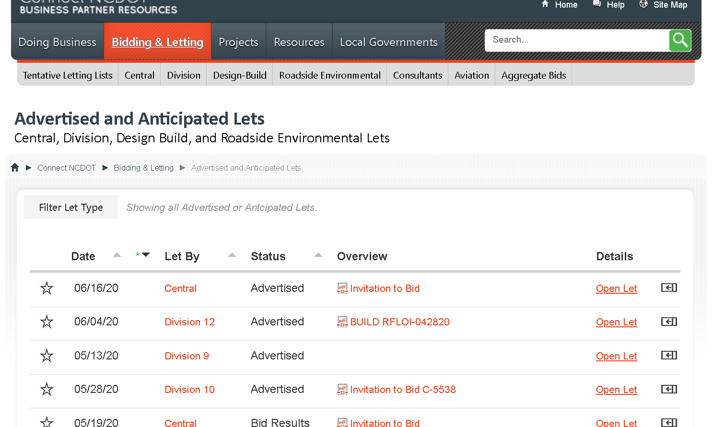

Patrick Doran is a Developer & Senior Interaction Designer in North Carolina.
Patrick has been building and designing for the web and devices since 1998.
[1]
Patrick designs mobile interfaces, creates wireframes, and obsesses about usability and performance. Lately, Patrick has spent a lot of time on Vue.js and SharePoint branding, design, and development.
Specializing in:
Front-End Web Development
HTML / CSS / JavaScript / Vue.js / PHP / Python / SASS / Git / Wordpress
Interaction Design & User Experience
User Experience Design / Adobe Photoshop, Illustrator, XD / Mockups & Prototyping
Microsoft 365 & SharePoint
Azure / SharePoint Online / SharePoint Framework (#spfx) / Teams
Speaking and Writing
Code Examples
Azure Cognative Services Handwriting Recognition with JavaScript
A proof-of-concept - the web interface POSTs a document to Azure Cognative Services and returns the value of any handwritten text in it.
Built with JavaScript, Axios JS, and Azure Cognative Services ML Handwriting Recognition.
View complete code on GitHub .
Prevent survey re-takes with a cookie that expires after a day
JavaScript that checks for a cookie before a survey is taken, and writes one if there isn't one already.
View complete code on GitHub .
JavaScript and SharePoint: Convert List Item to PDF
Reads a query string from a SharePoint URL, and then generates a PDF based off that data.
Uses SharePoint On-Premise, Axios JS, and the pdfMake library.
View complete code on GitHub .
CSS for SharePoint UI upgrade
CSS styles to restyle the default SharePoint interface.
View complete code on GitHub .
SharePoint REST API and Javascript: Dynamic Dropdowns
Javascript to generate dropdown menus based on the values in a SharePoint list.
View complete code on GitHub .
Load a report dynamically with JavaScript and HTML
Based on the current date, creates dropdown menus that query a REST endpoint for dynamically generated PDF reports.
View complete code on On Github .
Recent Projects
Complete I-540 Project Map
Built to inform and engage Raleigh-area citizens about a large multi-decade construction project. Utilizes Leaflet.js, Bing Maps, and GeoJSON data on a public-facing SharePoint site
Role: Developer, Designer | Visit Site GitHub Repo
United GIFs of America
Combined the Giphy API, Vanilla JavaScript, offline storage, and SVG maps to allow the citizen to easily identify and save their state's offiical GIF.
Role: Developer, Designer | Visit Site GitHub Repo
North Carolina DMV REAL ID Wizard
Built to help citizens navigate the complexities of getting a REAL ID. Utilizes Vue.js and Vue-CLI on a public-facing SharePoint site
Role: Front-End Developer | Visit Site GitHub Repo

NCDOT Letting Rollup Dashboard
Developed to help construction companies stay up to date on the latest project lettings. Utilizes JavaScript,local storage, and open source libraries like Tabulator, Moment.js, and Office Fabric UI a public-facing SharePoint site
Role: Front-End Developer | Visit Site GitHub Repo
Get in touch
Email is pdoran@gmail.com
Code samples on GitHub
Developer insights on Twtiter
Professional history on LinkedIn
This is the 7th iteration of PatrickDoran.com. The first one used the < frameset > tag. I regret nothing.